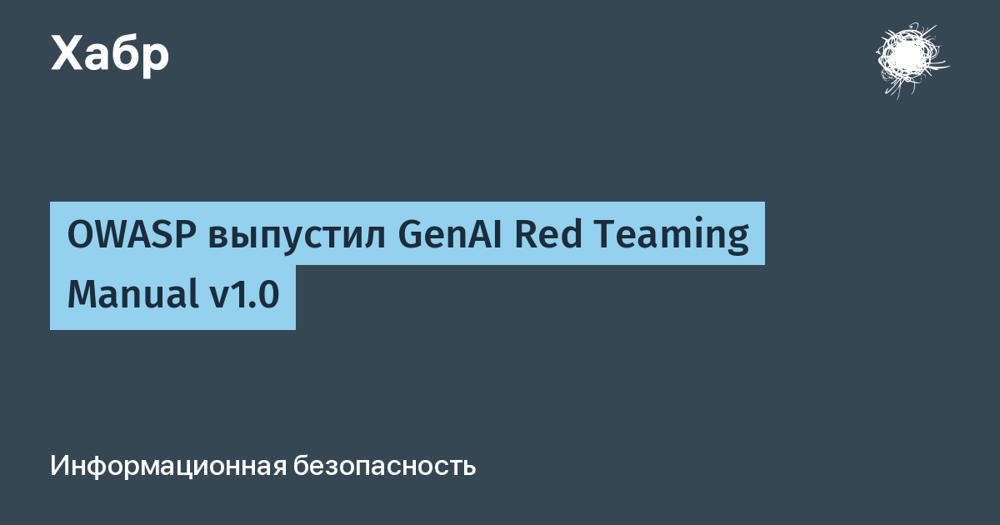

Manual вышел 20 октября 2026 года и построен вокруг восьмифазной методики: планирование, разведка, картирование поверхности атаки, эксплуатация, закрепление, оценка влияния, отчётность и устранение. Проверяются не только языковые модели, но и приложения, мультимодальные интерфейсы и целиком ИИ-агенты. Акцент — на этичном тестировании, воспроизводимых находках и измеримых результатах, вписанных в защитные процессы компании, а не живущих отдельным «актом вандализма».
Отдельная ценность документа — разделы про агентные системы. Методика требует проверять, выполняет ли агент вообще то, что ему поручили: ИИ-агент может работать с формально ограниченными правами и при этом делать совсем не то, что от него ждали. В многоагентных средах отдельно проверяются передача полномочий, разрешения и то, как сохранённая память влияет на последующие действия. Это прямой ответ на практику 2026 года, где агентские рантаймы стали полноценной поверхностью атаки.
Вторая тонкость, которой не хватало прежде:Manual предлагает проверять достоверность самих результатов испытаний. Если серия атак не дала успеха — это пока лишь факт неудачи красной команды, а не гарантия безопасности; для количественных выводов руководство предлагает доверительные интервалы и явные ограничения выводов. Вердикт человека, программы или модели-оценщика тоже может ошибаться — и это петля обратной связи, которую нужно закрывать.
Авторы — те же, что выпустили OWASP Top 10 для LLM-приложений; предшественник, Red Teaming Guide, вышел в январе 2025 года на 77 страницах, новый документ удвоился в объёме и прошёл публичное обсуждение. Рядом живёт GenAI Red Team Lab на GitHub — песочницы и примеры эксплуатации в придачу к методике. Для рынка это первый случай, когда «потестить ИИ на взлом» перестаёт быть искусством отдельных энтузиастов и получает общую методику и метрики — полезную и тестировщикам, и заказчикам, которые хотят понимать, что именно проверяла команда и на чём основаны её выводы.